Bài 1: Làm quen với excel
Bài 1: Làm quen với Excel
Giới thiệu
Excel làchương trình bảng tínhcho phép bạnlưu trữ,sắp xếpvàphân tíchthông tin. Mặc dù bạn có thể cho rằng Excel chỉ được một số người nhất định sử dụng để xử lý dữ liệu phức tạp nhưng bất kỳ ai cũng có thể tìm hiểu cách tận dụng các tính năngmạnh mẽ****của chương trình. Cho dù bạn đang lập ngân sách, sắp xếp nhật ký đào tạo hay tạo hóa đơn, Excel đều giúp bạn dễ dàng làm việc với các loại dữ liệu khác nhau.
Hãy xem video bên dưới để tìm hiểu thêm về Excel.
Về hướng dẫn này
Các quy trình trong hướng dẫn này sẽ áp dụng chotất cả các phiên bản Microsoft Excel gần đây, bao gồmExcel 2019,Excel 2016vàOffice 365. Có thể có một số khác biệt nhỏ, nhưng nhìn chung các phiên bản này đều giống nhau. Tuy nhiên, nếu đang sử dụngphiên bản cũ hơn, bạn có thể tham khảo một trong các hướng dẫn Excel khác của chúng tôi.
Excel Start Screen
Khi bạn mở Excel lần đầu tiên,Excel Start Screensẽ xuất hiện. Từ đây, bạn sẽ có thể tạosổ làm việc mới, chọnmẫuvà truy cậpgần đâyđã chỉnh sửasổ làm việccủa mình.
- TừExcel Start Screen, tìm và chọnBlank workbookđể truy cập vào giao diện Excel.
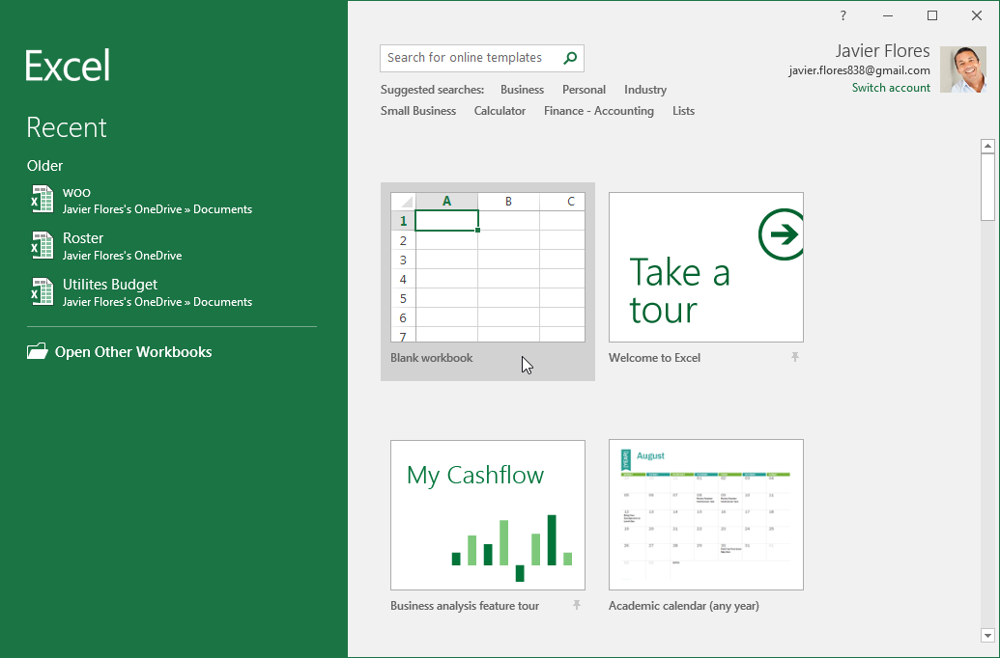
Các phần của cửa sổ Excel
Một số phần của cửa sổ Excel (nhưRibbonvàscroll bar) là tiêu chuẩn trong hầu hết các chương trình khác của Microsoft. Tuy nhiên, có những tính năng khác dành riêng cho bảng tính, chẳng hạn nhưthanh công thức, hộp tênvàworksheet tab.
Nhấp vào các nút trong phần tương tác bên dưới để làm quen với các phần của giao diện Excel.
donechỉnh sửa các điểm nóng
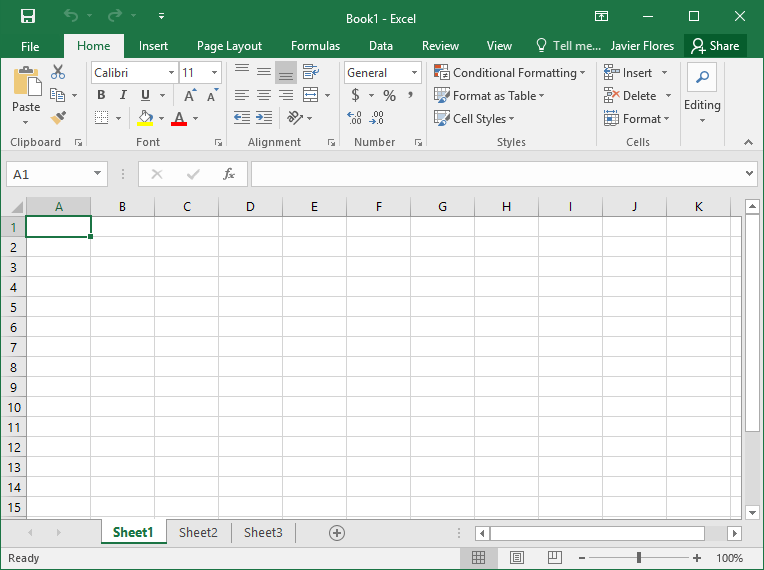
Quick Access Toolbar
Quick Access Toolbarcho phép bạn truy cập các lệnh phổ biến bất kể tab nào được chọn. Bạn có thể tùy chỉnh các lệnh tùy theo sở thích của mình.
Name Box
Hộp Tênhiển thịvị tríhoặctêncủaô đã chọn.
Formula Bar
Trongthanh công thức, bạn có thể nhập hoặc chỉnh sửadữ liệu, công thức hoặchàmsẽ xuất hiện trong một ô cụ thể.
Cột
cộtlà một nhóm các ô chạy từ đầu trang đến cuối trang. Trong Excel, các cột được xác định bằngchữ cái.
Ribbon
Ribbonchứa tất cả cáclệnhbạn sẽ cần để thực hiện các tác vụ phổ biến trong Excel. Nó có nhiềutab, mỗi tab có một sốnhómlệnh.
Tài khoản Microsoft
Từ đây, bạn có thể truy cập thông tintài khoản Microsoftcủa mình, xemhồ sơcủa bạn vàchuyển đổitài khoản.
Tell me
HộpTell mehoạt động giống như một thanh tìm kiếm giúp bạn nhanh chóng tìm thấy các công cụ hoặc lệnh bạn muốn sử dụng.
Ô
Mỗi hình chữ nhật trong sổ làm việc được gọi làô. Ô làgiao điểmcủa một hàng và một cột. Chỉ cần nhấp đểchọnmột ô.
Hàng ngang
hànglà một nhóm các ô chạy từ bên trái sang bên phải của trang. Trong Excel, các hàng được xác định bằngsố.
Bảng tính
Các tệp Excel được gọi làsổ làm việc. Mỗi sổ làm việc chứa một hoặc nhiềubảng tính. Nhấp vào các tab để chuyển đổi giữa chúng hoặc nhấp chuột phải để có thêm tùy chọn.
Kiểm soát thu phóng
Nhấp và kéothanh trượtđể sử dụngđiều khiển thu phóng. Số ở bên phải thanh trượt phản ánhphần trăm thu phóng.
Tùy chọn xem bảng tính
Có ba cách để xem một bảng tính. Chỉ cần nhấp vào một lệnh để chọn chế độ xem mong muốn.
Scroll bar dọc và ngang
Các scroll bar cho phép bạn cuộn lên xuống hoặc sang bên. Để thực hiện việc này, hãy nhấp và kéodọchoặcscroll bar ngang.
Làm việc với môi trường Excel
RibbonvàQuick Access Toolbarlà nơi bạn sẽ tìm thấy các lệnh để thực hiện các tác vụ phổ biến trong Excel.Backstage viewcung cấp cho bạn nhiều tùy chọn khác nhau để lưu, mở tệp, in và chia sẻ tài liệu của bạn.
Ribbon
Excel sử dụnghệ thống Ribbon theo thẻthay vì các menu truyền thống.Ribbonchứanhiều tab, mỗi tab có một sốnhómlệnh. Bạn sẽ sử dụng các tab này để thực hiệncác tác vụ phổ biếnnhất trong Excel.
- Mỗi tab sẽ có một hoặc nhiều nhóm.
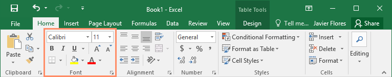
* Một số nhóm sẽ có mũi tên bạn có thể nhấp vào để có thêm tùy chọn.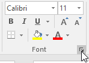
* Bấm vào một tab để xem thêm lệnh.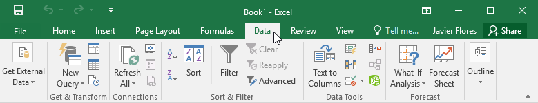
* Bạn có thể điều chỉnh cách hiển thị Ribbon bằng Ribbon Display Options.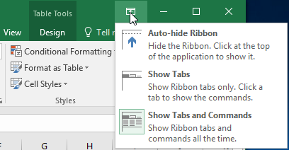
Để thay đổi Ribbon Display Options:
Ribbon được thiết kế để đáp ứng tác vụ hiện tại của bạn nhưng bạn có thể chọnthu nhỏnó nếu bạn thấy nó chiếm quá nhiều không gian màn hình. Nhấp vào mũi tênRibbon Display Optionsở góc trên bên phải của Ribbon để hiển thị menu thả xuống.
Có ba chế độ trong menu Ribbon Display Options:
- Tự động ẩn Ribbon: Tự động ẩn hiển thị sổ làm việc của bạn ở chế độ toàn màn hình và ẩn hoàn toàn Ribbon. Đểhiển thị Ribbon, hãy nhấp vào lệnhMở rộng Ribbonở đầu màn hình.
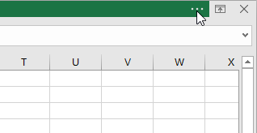
* Show Tabs: Tùy chọn này ẩn tất cả các nhóm lệnh khi chúng không được sử dụng, nhưngtabsẽ vẫn hiển thị. Đểhiển thị Ribbon, chỉ cần nhấp vào một tab.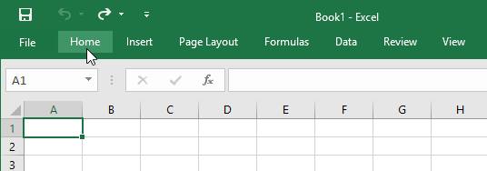
* Show Tabs và Lệnh: Tùy chọn này tối đa hóa Ribbon. Tất cả các tab và lệnh sẽ hiển thị. Tùy chọn này đượcchọn theo mặc địnhkhi bạn mở Excel lần đầu tiên.Quick Access Toolbar
Nằm ngay phía trên Ribbon,Quick Access Toolbarcho phép bạn truy cập các lệnh phổ biến bất kể tab nào được chọn. Theo mặc định, nó bao gồm các lệnhSave,UndovàRepeat. Bạn có thể thêm các lệnh khác tùy theo sở thích của mình.
Để thêm lệnh vào Quick Access Toolbar:
- Nhấp vàomũi tên thả xuốngở bên phảiQuick Access Toolbar.
- Chọnlệnhbạn muốn thêm từ menu thả xuống. Để chọn từ các lệnh bổ sung, hãy chọnLệnh khác.
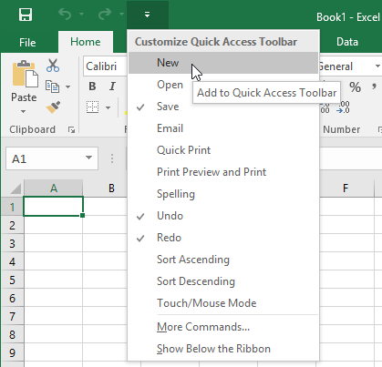
3. Lệnh sẽ đượcthêmvào Quick Access Toolbar.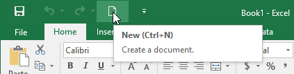
Cách sử dụng Hãy cho tôi biết:
HộpTell mehoạt động giống như một thanh tìm kiếm giúp bạn nhanh chóng tìm thấy các công cụ hoặc lệnh bạn muốn sử dụng.
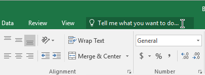
- Nhập từ ngữ của riêng bạn những gì bạn muốn làm.
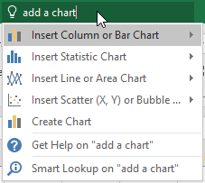
2. Kết quả sẽ cung cấp cho bạn một vài lựa chọn phù hợp. Để sử dụng một cái, hãy nhấp vào nó giống như bạn thực hiện một lệnh trên Ribbon.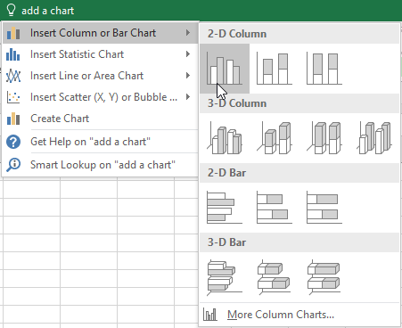
Chế độ xem bảng tính
Excel có nhiều tùy chọn xem giúp thay đổi cách hiển thị sổ làm việc của bạn. Những chế độ xem này có thể hữu ích cho nhiều tác vụ khác nhau, đặc biệt nếu bạn địnhinbảng tính. Đểthay đổi chế độ xem trang tính, hãy tìm các lệnh ở góc dưới bên phải của cửa sổ Excel và chọnChế độ xem bình thường,Chế độ xem bố cục tranghoặcChế độ xem ngắt trang.
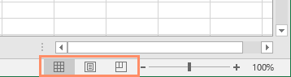
- Chế độ xem bình thườnglà chế độ xem mặc định cho tất cả các trang tính trong Excel.
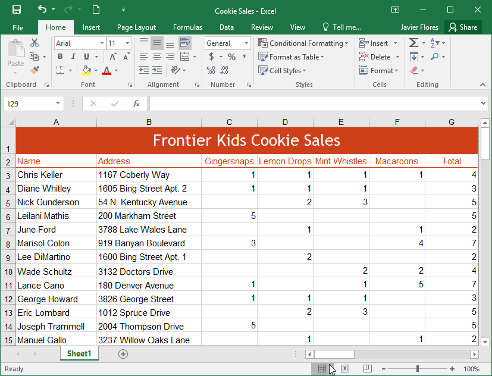
* Chế độ xem Bố cục Tranghiển thị cách trang tính của bạn sẽ xuất hiện khi được in. Bạn cũng có thể thêm đầu trang và chân trang trong chế độ xem này.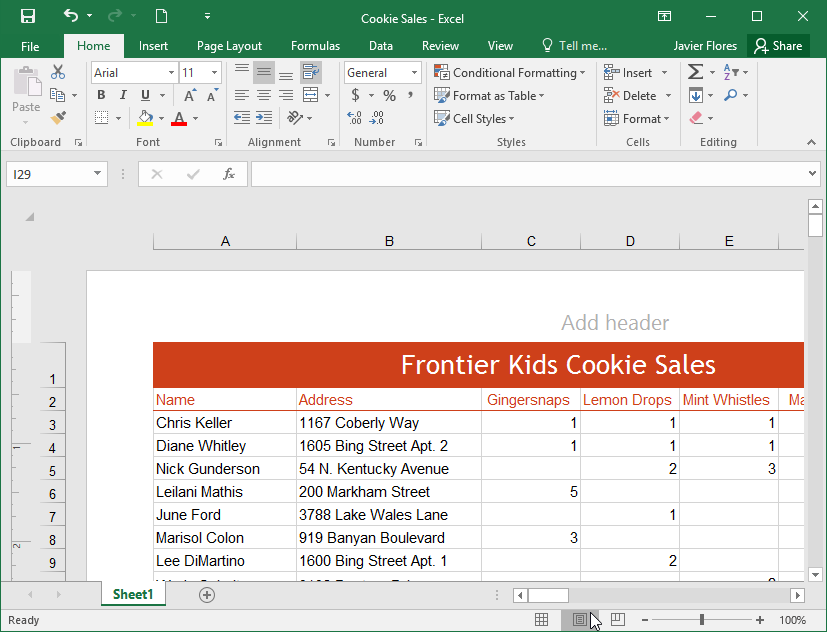
* Chế độ xem ngắt trangcho phép bạn thay đổi vị trí ngắt trang, điều này đặc biệt hữu ích khi in nhiều dữ liệu từ Excel.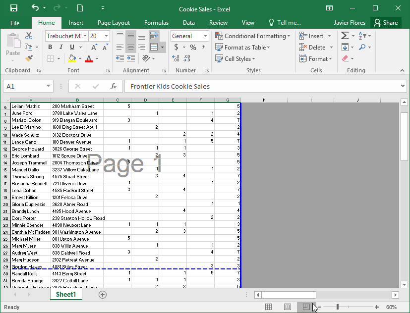
Xem hậu trường
Backstage viewcung cấp cho bạn nhiều tùy chọn khác nhau để lưu, mở tệp, in và chia sẻ sổ làm việc của bạn.
Để truy cập chế độ xem Hậu trường:
- Nhấp vào tabTệptrênRibbon.Backstage viewsẽ xuất hiện.

Nhấp vào các nút trong phần tương tác bên dưới để tìm hiểu thêm về cách sử dụng chế độ xem Hậu trường.
chỉnh sửa điểm phát sóng
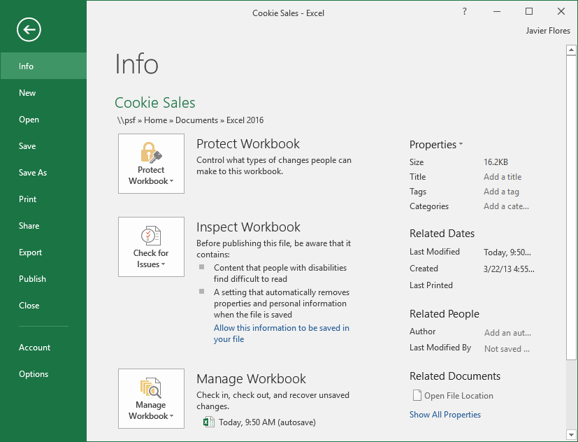
Quay lại Excel
Bạn có thể sử dụng mũi tên đểđóngBackstage viewvà quay lại Excel.
Thông tin
KhungThông tinsẽ xuất hiện bất cứ khi nào bạn truy cập chế độ xem Backstage. Nó chứathông tinvề sổ làm việc hiện tại.
Mới
Từ đây, bạn có thể tạosổ làm việc trống mớihoặc chọn từ bộ sưu tập lớnmẫu.
Mở
Từ đây, bạn có thểmở các sổ làm việc gần đâycũng như các sổ làm việc được lưu vàoOneDrivehoặc trênmáy tínhcủa bạn.
Lưu và lưu dưới dạng
Sử dụngSavevàSave Asđể lưu sổ làm việc của bạn vàomáy tínhhoặc vàoOneDrivecủa bạn.
In
Từ ngănIn, bạn có thể thay đổicài đặt invà in sổ làm việc của mình. Bạn cũng có thể xembản xem trướcsổ làm việc của mình.
Chia sẻ
Từ đây, bạn có thể mời mọi ngườixem và cộng táctrên sổ làm việc của mình. Bạn cũng có thể chia sẻ sổ làm việc của mình bằng cách gửi email dưới dạng tệp đính kèm.
Xuất khẩu
Bạn có thể chọnxuấtsổ làm việc của mình ở định dạng khác, chẳng hạn nhưPDF/XPShoặcExcel 1997-2003.
Xuất bản
Tại đây, bạn có thể xuất bản sổ làm việc của mình lênPower BI, dịch vụ chia sẻ đám mây của Microsoft dành cho sổ làm việc Excel.
Đóng
Bấm vào đây đểđóngsổ làm việc hiện tại.
Tài khoản
Từ khungTài khoản, bạn có thể truy cập thông tintài khoản Microsoftcủa mình, sửa đổichủ đềvànềncũng nhưđăng xuấtkhỏi tài khoản của mình.
Tùy chọn
Tại đây, bạn có thể thay đổi nhiều tùy chọntùy chọn Excel,cài đặtvàngôn ngữ.
Thử thách!
- MởExcel.
- Nhấp vàoBlank workbookđể mở bảng tính mới.
- Thay đổiRibbon Display OptionsthànhShow Tabs.
- Sử dụngQuick Access Toolbar tùy chỉnh, nhấp để thêmMới,In nhanhvàChính tả.
- Trong thanhTell me, nhập từMàu. Di chuột quaTô màuvà chọnmàu vàng. Điều này sẽ lấp đầy một ô với màu vàng.
- Thay đổi chế độ xem trang tính thành tùy chọnBố cục Trang.
- Khi bạn hoàn tất, màn hình của bạn sẽ trông như thế này:
 8. Thay đổiTùy chọn hiển thị ribbontrở lạiShow Tabs và lệnh.
9. ĐóngExcel vàKhông lưucác thay đổi.
8. Thay đổiTùy chọn hiển thị ribbontrở lạiShow Tabs và lệnh.
9. ĐóngExcel vàKhông lưucác thay đổi.
/en/excel/hiểu-onedrive/content/